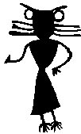

Bees
(and honey)

I have included this section, because bees seem
to come up in
moon legends quite often. I think it may be something to do with them
beeing (sorry, being)
ruled by a queen, which sort of ties in with legends of
The White Goddess Images of a goddess
portrayed as a queen bee are found in Minoan and other early European art.
The picture above is from a Neolithic cave painting from Southern Spain.
It seems to show a goddess with the head of a bee and birds feet.
Many people find the image slightly disturbing
[1][3].
The word "apis" meant "bull" to the Egyptians, and also "bee" in Latin. This may not be coincidence.
The art of the Minoan civilisation of Crete often features bulls horns
with bees (or sometimes butterflies or double axes)above them. Bees and
butterflies are both symbols of the soul, and these pictures may represent
the departing soul of a sacred bull, sacrificed with a double headed axe or
labrys (the word "labyrinth" means "house of the double headed axe").
It is not known if the Minoans kept bees, but it is known that they drank
mead[8]
It used to be believed that bees could be spontaneously
generated from the carcasses of bulls, especially if they were
buried up to the horns in the ground. This process was known as
bougonia Virgil describes the practice in his Georgics book IV, attributing it to the Egyptians:
First in a place by nature close, they build
A narrow flooring, guttered walled, and tiled.
In this, four windows are contrived , that strike,
To the four winds opposed, their beams oblique.
A steer of two years old they take, whose head
Now first with burnished horns begins to spread:
They stop his nostrils, while he strives in vain
To breathe free air, and struggles with his pain.
Knocked down he dies: his bowels, bruised within,
Betray no wound on his unbroken skin.
Extended thus, in this obscene abode
They leave the beast; but first sweet flowers are strewed
Beneath his body, broken boughs and thyme,
And pleasing cassia, just renewed in prime.
This must be done ere spring makes equal day,
When western winds on curling waters play;
Ere painted meads produce their flowery crops,
Or swallows twitter on the chimney tops.
The tainted blood, in this close prison pent,
Begins to boil, and through the bones ferment.
Then (wondrous to behold) new creatures rise,
A moving mass at first, and short of thighs;
Till, shooting out with legs, and imped with wings,
The grubs proceed to bees with pointed stings,
And more and more affecting air they try
Their tender pinions, and begin to fly:
At length like summer storms from spreading clouds,
That burst at once, and pour impetuous floods-
Or flights of arrows from the Parthian bows,
When from afar they gall embattled foes-
With such a tempest through the skies they steer;
And such a form the winged squadrons bear.
What god , O muse! this useful science taught?
Or by what man's experience was it brought?
[7][9].
Thomas Muffet shared this belief
"Of the first generation of bees, aristotle hath a long discourse. The
philosophers following him have rightly determined in my opinion,
that their generation doth proceed from the corruption of some other body:
as of a bull, oxe, cow calf,....out of the brains of these beasts are bred
the kings and nobility, and their flesh the common sort of
ordinary bees."[6]
Muffet also describes the belief that different sorts of bees are generated
by the corpses of lions, bulls, cows and calves. Muffet was a great
authority on all kinds of invertebrates, especially spiders, but according
to a popular nursery rhyme, his daughter was not so keen!
Samuel Hartlib (1600-1662), describes this practice in his "Reformed commonwealth of bees", as being "practised by that great husbandman, old Mr. Carew of Anthony in Cornwall"[10]
Small animals, such as maggots and flies were widely believed to be generated spontaneously, as Ben Johnson wrote:
"Art can beget bees, hornets, beetles, wasps,
Out of the carcasses and dung of creatures;[10]
Droneflies, which closely resemble bees often lay their eggs on the carcasses of
animals, although wild bees could conceivably make a nest in the rib cage
of a dead animal (which brings us on to Samson
and his riddle
"out of the eater came forth meat, and out of the strong came forth sweetness" .)
Judging by their art, the Minoans seem to have worshipped a goddess, and
were possibly matriarchal too. A particularly fine piece of
jewellery, in the shape of two bees, was found at Chryssolakkos near
Malia*,
Crete (click here for picture)
In the Finnish Kalevala [5],
there is a tale called "The great ox, and the brewing of the ale"
about a great feast, for which a huge ox is slaughtered. The ox is
described in a similar way to the one owned by
Boots :
"Long his horns one hundred fathoms,
Muzzle broad as half a hundred,
For a week there ran an ermine
All along the yoke he carried,
All day long there flew a swallow
'Twixt the mighty ox's horn tips,
Striving through the space to hasten,
Nor found resting place between them;
Month long ran a summer-squirrel
From his neck unto his tail end,
Nor did he attain the tail tip,
Till a month had quite passed over,"
The ale for the feast, does not ferment properly until the maiden preparing
the ale calls upon a bee to gather honey:
"Then he soaked his wings with honey,
Plunged his plumes in liquid honey,
From the brightest of the herbage,
From the tips of golden flowerets;
To the maiden's hands he brought it,
To the noble damsel's fingers.
In the ale the maiden cast it,
In the beer she poured it likewise,
And the beer at length fermented,
And the fresh drink now foamed upward,"
(For more on honey and homebrew, click here
On the subject of bees and honey, Pliny in his
"Natural history"[2}, wrote:
"Honey comes out of the air and is chiefly formed at the
rising of the stars, and especially when the dogstar shines
forth, and not at all before the rising of the Pleiads
**, in the periods just
before dawn. Consequently at that season at early dawn, the leaves of trees are
found bedewed with honey"
Pliny is unsure whether honey is
"The perspiration of the sky or a sort of saliva of the stars"
but he is certain that it is obtained more copiously at full moon, and that bees
obtain the best honey from the leaves of oaks,
limes and reeds. He also
states
that bees are ruled by a king, detest menstruating women and can be
killed by
the smell of boiled
crabs*** [2]. The Greeks and Roman writers believed that beehives were ruled by a king, but earlier people like the Minoans knew better. The anglo saxons seem to have understood that the queen and worker bees were female, as this charm to claim a swarm of bees shows:
Stay, victorious women, sink to earth!
Never fly wild to the wood.
Be as mindful of my good
as each man is of food and home.[11]
It has often been suggested that the Egyptians may have been the first people to
domesticate bees, but there is little evidence for this. Lower Egypt was famous for its
bees, and the Egyptians explained this as follows:
One day the god Re [Ra] wept and the tears that dropped from his eyes turned into bees"
This would seem to undermine a certain theory described in the section on
The Utchat
An early title of the pharoahs was Bity, meaning "the one of the bee". It is important to note that
the bee in question represented the land of lower Egypt, and not the Pharoah himself [3].
But then "conquering kings their titles take, from the kings [or queens!]
their captives make" (something like that anyway).
The Hindu gods Vishnu, Krishna and Indra were called Madhava or "nectar born ones", and were often represented as bees perched on a lotus flower. Madhava is derived from madhu meaning honey, which seems to be related to the saxon medu meaning mead, and also the name of the celtic queen of the fairies Madb[10]

*"meli" means honey in Greek, as in the name Melissa and the drink
Melomel (a kind of fruit mead).
Could Malia have been a place renowned for its honey? I went there once.
There is a huge gorge there, with lots of
wild flowers on its slopes.[back]
**May [back]
***I find Pliny extremely quotable,
but I am not sure why. I think it's because most of the things he wrote were:
a) Extremely strange and
b) Totally wrong
Nobody's perfect :)[back]
Links to other sites on the Web
Gordon's Entomological Page
For more on bees (and other bugs) and links to sites on beekeeping
Masonic beliefs about bees
More about the Kalevala
Back to Moonshine
Back to Transient Lunar Phenomena (and Baron Munchausen)
Back to Set and Samson
Back to heather beer
Back to Main Page